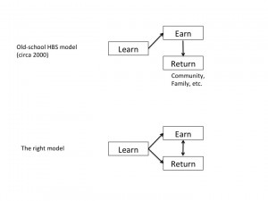

Course Wrap (FD, Tuesday, Week 13)
founders-dilemmasyear-twoHow do rich kings do it?
-- Industries/business models that are wide open (Apple)
-- Finding a "third path" (effective balance between creating value and keeping control)
-- Started early
-- Geography arbitrage? Take a proven business model and apply it somewhere else (Babies.com in Brazil)
Recovering from mistakes:
-- "Inertia" approach => persistence; just keep on keeping on (Savage Beast/Pandora)
-- Reactive approach => hit the 'undo' key (Brian Scudamore at Rubbish Boys)
-- Proactive approach => build firewalls, craft dynamic agreements (Genevieve Theirs at Sittercity)
Some class discussion around the superiority of the proactive approach. I am not entirely convinced; I think it's way harder to be "proactive" than people think and then we are unwilling to make hard decisions/hit 'undo'/admit error in embarrassing ways.
Noam's Life Lessons:
-- The ladder of success is actually a roller-coaster, not a ladder.
-- Pick a career that makes you excited to get out of bed.
Don't postpone doing good until after you "make it."

{kind=link}